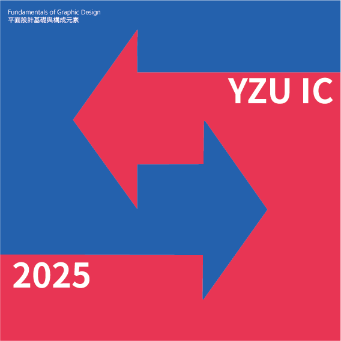
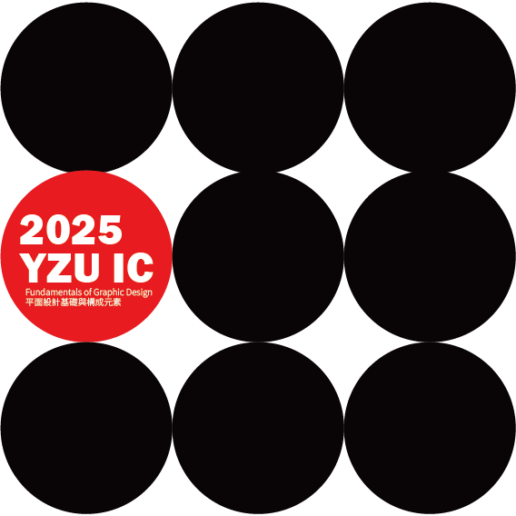
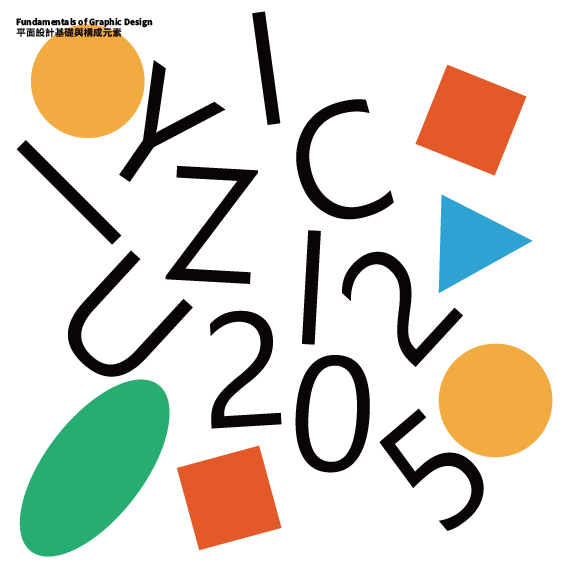
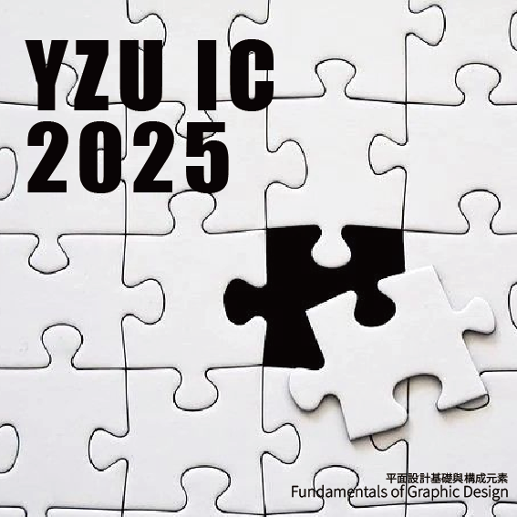
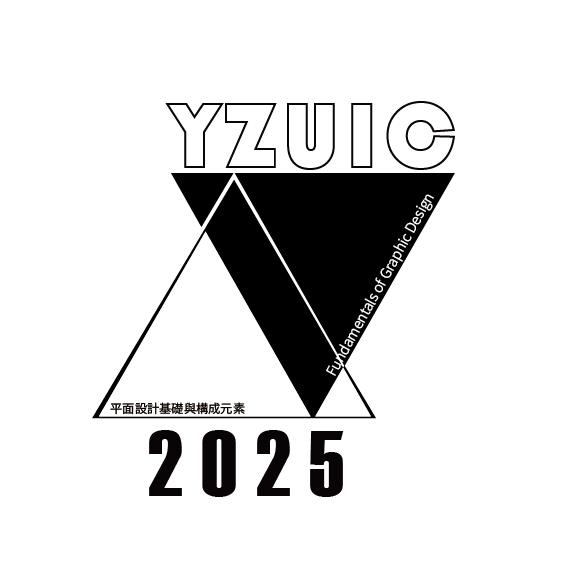
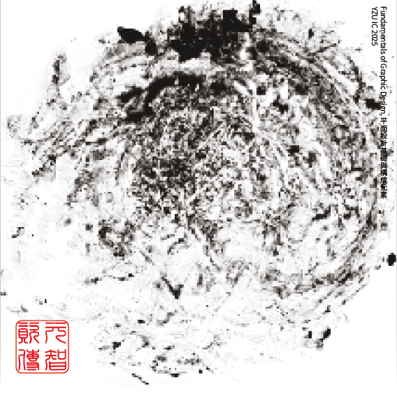
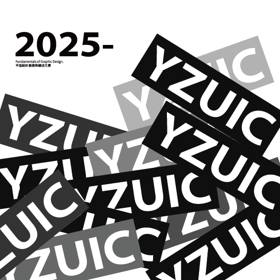
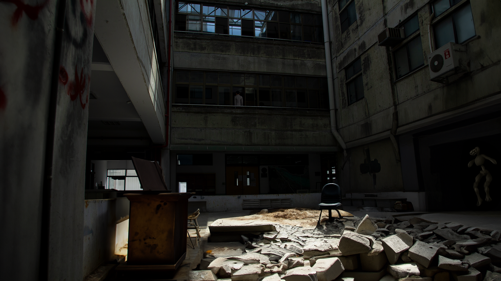

Visual Identity
收錄識別設計、圖形構成、版面與視覺系統相關作品， 探索圖像、字體、色彩與應用延伸之間的關係。
Info
Type｜Visual Identity
Category｜Logo / Graphic System / Mockup
Year｜2025–2026
Format｜Digital Design
Concept
本頁整理課程與練習過程中的視覺識別相關作品， 包含 Logo 發展、圖形系統、版面構成與 mockup 應用。
透過不同形式的練習，嘗試建立視覺元素之間的規則與延展性， 讓單一圖像能夠發展為更完整的視覺系統。
Identity System
以識別設計與圖形延伸為主，包含標誌、輔助圖形與視覺應用。

YZU IC Visual Identity

Mockup Application

Graphic System 01

Graphic System 02

Graphic System 03

Graphic System 04

Graphic System 04

Graphic System 04

Graphic System 04
Visual Experiment
其他視覺與影像合成練習，作為畫面氛圍、空間與材質感的探索。
Photoshop Study
